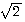
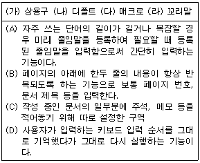
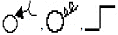
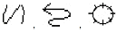
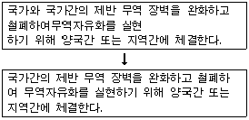
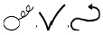
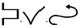
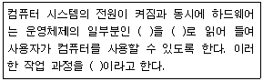

워드프로세서-(구-1급) (2011-06-19 기출문제)
1과목: 워드프로세싱 일반
1. 다음 중 공문서 항목 구분 시 셋째 항목의 항목 구분으로 사용할 수 있는 기호는?
- 가., 나., 다., …
- 1), 2), 3), …
- 가), 나), 다), …
- (1), (2), (3), …
(정답률: 71%)

2. 문서작성의 일반원칙에 해당하지 않는 것은?
- 문서는 쉽고 간명하게 한글로 작성하되, 올바른 뜻의 전달을 위하여 필요한 경우에는 괄호 안에 한자 및 외국어 등을 넣어 쓸 수 있다.
- 문서에 쓰는 숫자는 특별한 사유가 있는 경우를 제외하고는 아라비아 숫자로 쓴다.
- 문서에 쓰는 시, 분의 표기는 오전, 오후를 명확히 표기하되 시, 분의 글자를 생략하고 그사이 쌍점을 찍어 구분한다.
- 문서작성에 쓰이는 용지의 크기는 특별한 사유가 있는 경우를 제외하고는 A4 규격으로 한다.
(정답률: 67%)
3. 다음 전자출판 용어 중 이미지 변형 작업으로 채도, 조명도, 명암 등을 조절해 주는 기능을 무엇이라 하는가?
- 트래킹(Tracking)
- 프레임(Frame)
- 초크(Choke)
- 엠보스(Emboss)
(정답률: 77%)
4. 다음 중 맞춤법 검사(Spelling Check) 기능에 대한 설명으로 옳지 않은 것은?
- 작성된 문서의 내용과 내장된 사전과 비교하여 틀린 단어를 찾아주는 기능이다.
- 한글뿐만 아니라 영문에 대해서도 검사할 수 있다.
- 사전에 없는 단어는 사용자가 추가할 수 있다.
- 수식이나 화학식에서도 맞춤법 검사 기능을 이용한 오류 검사가 가능하다.
(정답률: 75%)
5. 다음 중 인쇄용지에 대한 설명으로 옳지 않은 것은?
- 낱장 용지의 가로 : 세로의 비율은 1 :

이다. - 공문서의 표준 규격은 B4(257㎜ x 364㎜)이다.
- 낱장 용지는 A판과 B판 용지로 구분된다.
- 낱장 용지의 규격은 전지의 종류와 전지를 분할한 횟수를 사용하여 표시한다.
(정답률: 72%)
6. 다음 중 워드프로세서의 저장 기능에 대한 설명으로 옳지 않은 것은?
- 암호를 설정하여 저장할 수 있다.
- 새 이름으로 저장하면 저장 위치 및 파일 이름, 저장 형식을 변경할 수 있다.
- 텍스트 파일 형식으로 저장하면 다른 워드프로세서에서 불러올 수 없다.
- 확장자가 .bak인 파일(백업파일)은 파일을 다시 저장하기 직전에 저장된 상태가 보관된다.
(정답률: 71%)
7. 다음 중 입력 장치에 대한 설명으로 옳지 않은 것은?
- CCD(Charge Coupled Device)는 광학 문자 판독기(OCR)에서 사용되는 장치로 빛의 신호를 전기적 신호로 변환하는 장치이다.
- 자기 잉크 문자 판독기(MICR)는 자성을 가진 특수잉크로 기록된 문자를 판독하는 장치이다.
- 빛을 이용하는 입력 장치에는 광학식 마우스, 스캐너, 바코드 판독기 등이 있다.
- 터치 패드(Touch Pad)는 노트북 컴퓨터에서 주로 사용되는 입력장치로 손가락의 접촉과 이동을 감지하여 화면의 커서를 움직이는 장치이다.
(정답률: 60%)
8. 다음 보기의 각 기능과 설명이 올바르게 연결된 것은?

- (가) - (A)
- (나) - (B)
- (다) - (C)
- (라) - (D)
(정답률: 77%)
9. 다음 중 내용이 같은 초대장에 미리 준비된 받는 사람들의 이름 문자열을 사용하여 한꺼번에 여러 장 인쇄할 수 있는 기능은 무엇인가?
- 메일머지(Mail Merge)
- 스타일(Style)
- 하이퍼텍스트(Hypertext)
- 스풀링(Spooling)
(정답률: 78%)
10. 다음 중 워드프로세서의 출력 기능에 대한 설명으로 옳지 않은 것은?
- B4 편집용지로 작성한 문서를 A4 인쇄용지에 축소하여 인쇄할 수 없다.
- 하나의 문서를 인쇄하면서 동시에 다른 작업을 할 수 있다.
- 작성한 문서의 내용을 파일로 인쇄할 수 있다.
- 프린터의 해상도를 높게 설정하면 출력 시간이 길어진다.
(정답률: 72%)
11. 다음 중 키보드나 마우스를 사용하여 메뉴나 아이콘을 선택하면 그것이 수행되는 직관적(Visual) 사용자 인터페이스 방식을 무엇이라고 하는가?
- CUI(Character User Interface)
- GUI(Graphic User Interface)
- Interface I/O Module
- Man-Machine Interface
(정답률: 56%)
12. 다음 중 전자출판(Electronic Publishing) 용어에 대한 설명으로 옳은 것은?
- 디더링(Dithering) : 기존의 이미지를 다른 형태로 새롭게 변형시키는 작업
- 오버프린트(Overprint) : 제한된 색상을 조합 또는 비율을 변화하여 새로운 색을 만드는 작업
- 스프레드(Spread) : 사진이나 그래픽 이미지를 문서의 바탕에 투명하게 인쇄하는 작업
- 커닝(Kerning) : 글자와 글자 사이의 간격을 미세하게 조정하는 작업
(정답률: 73%)
13. 다음 중 기억장치에 대한 설명으로 옳지 않은 것은?
- 처리 속도의 빠르기 순서는 레지스터, 캐시기억장치, 주기억장치, 보조기억장치 순이다.
- 주기억장치는 프로그램 기억 장소, 입력 데이터 기억 장소, 작업 장소 및 출력 데이터 기억 장소로 사용되며, 내부기억장치라고도 한다.
- 주기억장치는 중앙처리장치(CPU)보다 실행 속도가 빠르기 때문에 이를 보완하기 위해 개발된 것이 디스크 캐시(Disk Cache)이다.
- 보조기억장치는 주기억장치에 있는 프로그램이나 데이터를 별도로 기억시켜 두었다가 필요할 때에 사용할 수 있도록 하는 기억장치이다.
(정답률: 61%)
14. 다음 중 출판문화의 변화에 대해 올바르게 나열한 것은?
- 사진 식자 → 활자 인쇄 → 전자 출판 → 전자 통신 출판
- 사진 식자 → 활자 인쇄 → 전자 통신 출판 → 전자 출판
- 활자 인쇄 → 사진 식자 → 전자 통신 출판 → 전자 출판
- 활자 인쇄 → 사진 식자 → 전자 출판 → 전자 통신 출판
(정답률: 68%)
15. 다음 중 한글 코드에 대한 설명으로 옳지 않은 것은?
- KS X 1001 완성형 한글코드는 조합형에 비해 기억 공간을 많이 차지하며 코드가 없는 문자는 사용할 수 없다.
- KS X 1001 조합형 한글코드는 한글의 대부분을 표현할 수 있으며 정보 교환할 때 충돌이 발생할 수 있다.
- KS X 1001 완성형 한글코드는 영문과 숫자는1Byte, 한글과 한자는 2Byte로 표현한다.
- KS X 10⑤-1 유니코드는 다른 한글 코드에 비해 기억 장소를 적게 차지하며, 정보처리용 코드로 사용된다.
(정답률: 52%)
16. 결재권자가 휴가, 출장 기타의 사유로 결재할 수 없는 때에는 그 직무를 대리하는 자가 대결할 수 있되, 그 내용이 중요한 문서에 대하여는 결재권자에게 후에 어떻게 조처하여야 하는가?
- 사후에 보고한다.
- 사후에 반드시 결재를 받는다.
- 정규 결재과정을 다시 거친다.
- 내부 결재과정을 거친 후 시행한다.
(정답률: 67%)
17. 다음 중 문서 편집시 행 길이, 여백, 들여쓰기, 탭 위치 등을 설정하는데 도움을 주기 위해 사용하는 기능은?
- 다단 설정
- 눈금자
- 상황줄
- 격자
(정답률: 63%)
18. 다음 중 한자 입력 방법에 대한 설명으로 옳지 않은 것은?
- 한자가 많이 들어 있는 문서의 일부분 또는 전체를 블록 지정하여 모두 한글로 변환할 수 있다.
- 한자의 음을 모를 경우에는 부수 또는 총 획수 입력, 외자 입력 등으로 변환할 수 있다.
- 한자 사전이나 한자 목록에 들어 있는 한자 단어는 특정 영역에서 자동으로 변환할 수 있다.
- 한자의 음을 모르는 경우 검색 및 치환 기능으로 변환하여야 한다.
(정답률: 58%)
19. 다음 중 문서의 분량이 증가할 가능성이 있는 교정부호 들로만 올바르게 짝지어진 것은?


(정답률: 76%)
20. 다음과 같이 문장이 수정되었을 때 사용된 교정부호의 순서를 올바르게 나열한 것은?



(정답률: 76%)
2과목: PC 운영 체제
21. 다음 중 한글 Windows XP에서 할 수 있는 디스크 포맷에 관한 설명으로 옳지 않은 것은?
- 디스크를 포맷하면 디스크의 모든 데이터가 지워진다.
- 빠른 포맷은 디스크의 불량 섹터를 검색하지 않고 디스크에서 파일을 제거한다.
- 디스크 포맷 창에서 용량, 파일 시스템, 할당 단위 크기, 볼륨 레이블 등을 지정할 수 있다.
- 로컬 디스크 (C:)의 포맷 창에서 MS-DOS 시동 디스크를 만들 수 있다.
(정답률: 52%)
22. 다음 중 한글 Windows XP에서 [제어판]에 있는 [사용자 계정]에 대한 설명으로 옳지 않은 것은?
- 사용자 계정의 유형에는 컴퓨터 관리자, 제한된 계정, Guest 계정이 있다.
- 사용자 계정을 사용하면 각 사용자마다 다른 바탕화면과 작업 환경에서 작업할 수 있다.
- 컴퓨터에 제한된 계정을 가진 사용자가 적어도 한명은 반드시 있어야 한다.
- 제한된 계정을 사용하면 자신의 계정에 대한 암호, 계정 그림 등을 변경할 수 있다.
(정답률: 58%)
23. 다음 중 한글 Windows XP의 [시스템 등록 정보] 창에서 가능한 작업으로 옳지 않은 것은?
- 사용하는 컴퓨터의 CPU종류와 RAM의 용량을 파악할 수 있다.
- 시스템 복원을 위하여 디스크 정리나 검사를 수행 하도록 지정할 수 있다.
- 설치된 장치에 대하여 자동으로 권장 업데이트를 다운로드하고 설치하도록 지정할 수 있다.
- 해당 컴퓨터에서 원격 지원 초대를 보낼 수 있도록 지정할 수 있다.
(정답률: 37%)
24. 다음 중 한글 Windows XP의 [시스템 도구]에 있는 프로그램들을 사용하는 목적으로 옳지 않은 것은?
- 자주 사용하는 프로그램의 속도 향상과 하드디스크의 오류 검사를 할 수 있다.
- 필요 없는 파일을 삭제하여 하드디스크 공간을 확보할 수 있다.
- 시스템에서 사용하는 네트워크에 관한 설정을 할 수 있다.
- 시스템에 해를 끼칠 수 있는 변경 사항을 취소하고 시스템 설정 및 성능을 복원할 수 있다.
(정답률: 34%)
25. 다음 중 한글 Windows XP의 [내게 필요한 옵션] 창에서 할 수 있는 작업으로 옳지 않은 것은?
- 키보드를 이용한 문자 반복의 재입력 시간이나 키 반복 속도의 설정이 가능하다.
- 화면의 내용을 읽기 쉽도록 구성된 색상이나 글꼴을 사용할 수 있도록 설정할 수 있다.
- 키보드의 숫자 키패드로 마우스 포인터를 움직일 수 있도록 설정할 수 있다.
- 프로그램에서 나오는 음성 또는 소리를 화면에 자막으로 표시하도록 설정할 수 있다.
(정답률: 30%)
26. 다음 중 한글 Windows XP에서 바탕화면에 관한 설명으로 옳지 않은 것은?
- 바탕 화면은 창, 아이콘, 메뉴, 대화 상자가 표시되는 화면상의 작업 영역이다.
- 미리 정의된 아이콘, 글꼴, 색, 소리 및 다른 창 요소의 집합인 바탕 화면 테마를 사용하여 바탕 화면을 통일감 있고 개성적으로 연출할 수 있다.
- 바탕화면 보기 아이콘()을 클릭하면 실행 중인 모든 프로그램의 창을 닫고 바탕화면을 보여준다.
- 바탕 화면 정리 마법사를 사용하여 사용하지 않는 바로 가기를 바탕 화면에서 제거할 수 있다.
(정답률: 55%)
27. 다음 중 한글 Windows XP의 [인터넷 등록 정보] 창에 관한 설명으로 옳지 않은 것은?
- 인터넷 익스플로러 프로그램의 [보기]-[인터넷 옵션]을 선택하거나, 시작 메뉴에서 [보조 프로그램]-[통신]-[인터넷 옵션]을 차례로 선택하면 볼 수 있다.
- 브라우저를 시작할 때 표시되는 최초 웹 페이지를 지정하고, 컴퓨터에 저장된 임시 인터넷 파일을 삭제할 수 있다.
- 내용 관리자를 사용하여 불건전한 내용에 대한 액세스를 차단하고, 웹 페이지에 색 및 글꼴이 표시되는 방법을 지정할 수 있다.
- 보안 수준을 설정하고 전자 메일과 인터넷 뉴스 그룹을 읽을 때 사용하는 프로그램을 지정할 수 있다.
(정답률: 29%)
28. 다음 중 한글 Windows XP에서 폴더의 등록정보 창을 이용하여 확인할 수 있는 내용으로 옳지 않은 것은?
- 로컬이나 네트워크를 이용한 공유 및 보안을 설정 할 수 있다.
- 폴더의 위치와 크기, 디스크 할당 크기를 확인할 수 있다.
- 폴더를 만든 날짜, 수정, 액세스한 날짜를 확인할 수 있다.
- 선택한 폴더의 아이콘 그림을 변경할 수 있다.
(정답률: 32%)
29. 다음 중 한글 Windows XP의 부팅 모드 중에서 [안전 모드]에 대한 설명으로 가장 옳은 것은?
- 바이러스에 감염된 프로그램을 자동으로 실행하지 않도록 하는 모드이다.
- 최소한의 장치로 부팅하여 장치의 문제를 해결하기 위한 모드이다.
- 시스템에 오류가 발생한 경우 시스템이 자동으로 시작되지 않도록 하는 모드이다.
- 시스템에 문제없이 마지막으로 부팅한 상태의 모드로 다시 부팅하는 모드이다.
(정답률: 56%)
30. 다음 중 한글 Windows XP의 [그림판] 프로그램에서 [파일] 주 메뉴의 [보내기] 항목을 선택하였을 때 기능으로 옳은 것은?
- 해당 이미지를 바탕화면의 배경 그림으로 보낼 수 있다.
- 해당 이미지를 전자 메일을 사용하여 전송할 수 있다.
- 해당 이미지를 파일로 저장하고 바탕화면에 바로가기를 만들 수 있다.
- 해당 이미지의 인쇄를 위하여 프린터로 보내기를 할 수 있다.
(정답률: 42%)
31. 다음 중 한글 Windows XP의 폴더 창에 있는 선택된 파일의 이름을 변경하는 방법으로 옳지 않은 것은?
- 해당 파일을 선택한 후에 [F2] 키를 누르고 새이름을 입력하고 [Enter] 키를 누른다.
- 해당 파일을 선택한 후에 폴더창의 [파일] 메뉴의[이름 바꾸기]를 선택하고 새이름을 입력한 후에 [Enter] 키를 누른다.
- 해당 파일을 선택한 후에 바로 가기 메뉴에서 [이름 바꾸기]를 선택한 후에 새이름을 입력하고 [Enter] 키를 누른다.
- 해당 파일의 등록정보 창에서 [이름 바꾸기] 탭을 선택한 후에 새이름을 입력하고 [Enter] 키를 누른다.
(정답률: 38%)
32. 다음 중 한글 Windows XP에서 폴더에 있는 실행 파일을[Shift] 키와 [Ctrl] 키를 동시에 누른 상태로 바탕화면 으로 끌어놓기를 하였을 경우에 결과로 옳은 것은?
- 해당 파일이 바탕화면에서 실행된다.
- 해당 파일이 바탕화면에 복사된다.
- 해당 파일의 등록정보 상자가 나타난다.
- 바탕화면에 해당 파일의 바로 가기 아이콘이 만들어 진다.
(정답률: 57%)
33. 다음 중 한글 Windows XP에서 [메모장]에 관한 설명으로 옳지 않은 것은?
- 문서의 내용을 창 크기에 맞추어 텍스트 줄을 바꾸어 표시할 수 있다.
- 문서에 현재 시간과 날짜를 삽입하는 기능이 있다.
- 문서의 선택된 영역에 글꼴 스타일과 크기를 변경 할 수 있다.
- 문서에 머리글 또는 바닥글을 삽입할 수 있다.
(정답률: 43%)
34. 다음 중 한글 Windows XP의 [도움말 및 지원 센터] 창의 초기 화면에서 표시되는 [작업 선택]의 선택 내용으로 옳지 않은 것은?
- Windows Update를 사용하여 Windows를 최신 정보로 유지할 수 있다.
- 도구를 사용하여 컴퓨터 정보를 볼 수 있으며 문제 해결을 위해 재부팅할 수 있다.
- 시스템 복원을 사용하여 컴퓨터의 변경 사항을 취소할 수 있다.
- Windows XP와 호환되는 하드웨어 및 소프트웨어를 찾을 수 있다.
(정답률: 30%)
35. 다음 중 한글 Windows XP에서 [폴더 옵션] 창의 [보기] 탭에서 할 수 있는 작업으로 옳지 않은 것은?
- [내 컴퓨터]에 제어판을 표시 할 수 있도록 지정할 수 있다.
- 보호된 운영 체제 파일의 숨기기를 지정할 수 있다.
- 시스템 파일의 연결된 프로그램을 제거할 수 있도록 지정할 수 있다.
- 숨김 파일 및 폴더를 표시 안 함으로 지정할 수 있다.
(정답률: 53%)
36. 다음 중 한글 Windows XP에서 네트워크 연결을 위한 구성 요소의 유형 중 서비스에 관한 설명으로 옳은 것은?
- 사용자가 연결하는 네트워크에 있는 컴퓨터나 파일 액세스를 지원한다.
- 파일이나 프린터 공유 같은 기능을 제공한다.
- 사용자 컴퓨터가 다른 컴퓨터와 통신할 때 사용하는 언어이다.
- 네트워크를 연결하기 위한 하드웨어이다.
(정답률: 35%)
37. 다음 중 한글 Windows XP에서 자원 공유에 대한 설명으로 옳지 않은 것은?
- 네트워크를 통해 공유된 드라이브나 폴더를 사용하려면 [내 네트워크 환경]을 이용한다.
- 해당 호스트 컴퓨터가 사용 가능하지 않아도 연결된 드라이브를 사용할 수 있다.
- 네트워크 드라이브에서도 [내 컴퓨터]의 드라이브처럼 폴더의 생성 및 삭제가 가능하다.
- 공유할 드라이브나 폴더의 등록 정보 대화상자에서 공유할 파일의 형식을 설정할 수 없다.
(정답률: 33%)
38. 다음 중 한글 Windows XP에 설치된 프린터의 인쇄 관리자 창에 관한 설명으로 옳지 않은 것은?
- 인쇄 대기 중인 문서가 표시된다.
- 목록의 각 항목에는 인쇄 상태 및 페이지 수와 같은 정보가 제공된다.
- 프린터의 작동을 일시 중지하거나 계속할 수 있으며 인쇄 대기 중인 모든 문서의 인쇄를 취소할 수 있다.
- 인쇄 대기 중인 문서에 대해서는 용지 방향, 용지 공급 및 인쇄 매수와 같은 설정을 변경할 수 있다.
(정답률: 54%)
39. 다음 중 한글 Windows XP의 바탕화면에 있는 [휴지통]에 대한 설명으로 옳지 않은 것은?
- 휴지통의 크기는 사용자가 임의로 변경할 수 없다.
- 하드 디스크에서 삭제된 파일은 휴지통에 보관되지만 플로피 디스크에서 삭제된 파일은 휴지통에 보관되지 않는다.
- 휴지통의 저장 용량 보다 큰 파일을 삭제하면 휴지통에 보관되지 않는다.
- 파일을 삭제할 때 [Shift]키를 누르고 삭제하면 휴지통에 보관되지 않고 바로 삭제되므로 휴지통에서 복원이 불가능하다.
(정답률: 49%)
40. 다음 중 한글 Windows XP에서 [Windows 작업 관리자] 창에 관한 설명으로 옳지 않은 것은?
- [Windows 작업 관리자] 창은 <Ctrl>+<Alt>+<Delete> 키를 사용하면 실행할 수 있다.
- [Windows 작업 관리자] 창에서는 CPU 사용률을 알 수 있다.
- 네트워크의 이용률, 연결속도, 상태 등 네트워크 연결 상태를 확인할 수 있다.
- CPU와 메모리, 하드디스크 사용 현황을 그래프로 알 수 있다.
(정답률: 35%)
3과목: 컴퓨터 및 정보활용
41. 다음 중 전자우편을 사용할 때 지켜야 하는 예절에 대한 설명으로 가장 옳은 것은 ?
- 간결한 문서 작성을 위하여 약어를 사용할 수 있지만, 너무 많은 약어는 사용하지 않는다.
- 전자우편은 많은 사람이 읽어볼 수 있도록 메일링 리스트를 이용하여 가능한 많은 계정으로 보낸다.
- 전자우편을 보낼 때는 용량에 무관하므로 가급적 해상도 높은 사진, 동영상들을 제공하고, 제목만 보고도 중요도와 내용을 알 수 있도록 작성한다.
- 정확한 송.수신을 위하여 여러 번 재차 발송한다.
(정답률: 62%)
42. 다음 중 MIDI에 대한 설명으로 옳지 않은 것은?
- 전자악기 간의 디지털 신호에 의한 통신이나 컴퓨터와 전자악기 간의 통신규약이다.
- 음성, 음악, 각종 효과음 등 모든 형태의 소리를 저장 가능하다.
- 파일 크기가 작고 여러 가지 악기로 동시에 연주가 가능한 파일 형식이다.
- 음의 높이와 길이, 음표, 빠르기 등과 같은 연주 방법에 대한 명령어가 저장되어 있다.
(정답률: 44%)
43. 다음 중 그래픽 데이터 형식의 설명으로 옳지 않은 것은?
- BMP : Windows 운영체제의 표준 비트맵 파일 형식으로, 압축하여 저장하므로 파일의 크기가 작은 편이다.
- GIF : 인터넷 표준 그래픽 형식으로 8비트 컬러를 사용하여 최대 256 색상까지만 표현 할 수 있으나, 애니메이션 표현이 가능하다.
- JPEG : 사진과 같은 선명한 정지 영상 압축 기술에 대한 국제 표준으로 주로 인터넷에서 그림 전송에 사용된다.
- PNG : 선명한 그래픽(트루컬러)으로 투명색 지정이 가능하다.
(정답률: 46%)
44. 다음 중 정보의 내용이 전송 중에 수정되지 않고 전달되는 것을 의미하는 보안기능을 무엇이라고 하는가?
- 무결성(Integrity)
- 인증(Authentication)
- 기밀성(Confidentiality)
- 접근 제어(Access Control)
(정답률: 54%)
45. 다음 중 컴퓨터 시스템이 단위 시간에 얼마나 많은 자료를 처리할 수 있는가를 표시하는 용어는 어느 것인가?
- Access time
- Throughput
- MIPS
- FLOPS
(정답률: 37%)
46. 다음 중 RAM(Random Access Memory)에 대한 설명으로 옳은 것은?
- 전원이 꺼져도 기억된 내용이 사라지지 않는 비휘발성 메모리로 읽기만 가능하다.
- 주로 펌웨어(Firmware)를 저장한다.
- 컴퓨터의 기본적인 입출력 프로그램, 자가진단 프로그램, 한글, 한자코드 등이 수록되어 있다.
- 주기적으로 재충전(Refresh)하는 DRAM은 주기억장치로 사용된다.
(정답률: 45%)
47. 다음 중 광대역 종합 정보 통신망(B-ISDN)에 대한 설명으로 옳은 것은?
- 빠른 전송 속도에 비해 사용료가 경제적이다.
- 비동기 전송 방식(ATM)을 기반으로 구축되며, 넓은 대역폭을 사용한다.
- 자원 공유를 목적으로 학교, 연구소, 회사 등이 구내에서 사용하는 통신망이다.
- 동축 케이블을 사용하여 문자, 음성, 고화질의 동영상까지 전송할 수 있는 통신망이다.
(정답률: 44%)
48. 다음 중 언어번역 프로그램(Language translator)에 해당하지 않는 것은?
- 로더
- 어셈블러
- 인터프리터
- 컴파일러
(정답률: 56%)
49. 다음 중 중앙처리장치와 주기억장치의 속도 차이를 줄이기 위해 사용되는 메모리는 어느 것인가?
- 플래시 메모리
- 가상기억장치
- 연관기억장치
- 캐시 메모리
(정답률: 66%)
50. 다음 보기의 ( ) 안에 들어갈 용어를 순서대로 올바르게 나열한 것은?

- 커널(kernel), 주기억장치, 로딩(loading)
- 서비스 프로그램, 보조기억장치, 부팅(booting)
- 커널(kernel), 주기억장치, 부팅(booting)
- 서비스 프로그램, 주기억장치, 로딩(loading)
(정답률: 55%)
51. 다음 중 ISO(국제표준화기구)가 정의한 국제표준규격 통신 프로토콜인 OSI 7계층 모델의 물리적 계층에서 발생하는 오류를 발견하고 수정하는 기능을 맡으며 링크의 확립, 유지, 단절의 수단을 제공하는 계층은?
- 네트워크 계층(Network Layer)
- 데이터 링크 계층(Data Link Layer)
- 세션 계층(Session Layer)
- 응용 계층(Application Layer)
(정답률: 45%)
52. 다음 중 멀티미디어 PC의 주변장치에 대한 설명으로 옳지 않은 것은?
- DVD는 기존 CD와 같은 크기로 한 면에 4.7 GB의 정보를 담을 수 있다.
- CD-R은 WORM(Write Once Read Many) CD라고도 한다.
- 사운드 카드는 오디오 파일의 음을 재생만 할 수 있는 장치이다.
- 비디오 오버레이 보드는 외부 비디오 신호를 컴퓨터 화면과 함께 표시할 수 있도록 하는 장치로 TV나 비디오를 보면서 컴퓨터 작업을 할 수 있다.
(정답률: 46%)
53. 다음 중 하나의 시스템을 여러 사용자가 공유하여 동시에 대화식으로 작업을 수행할 수 있으며, 시스템은 일정 시간 단위로 CPU 사용을 한 사용자에서 다음 사용자로 신속하게 전환함으로써, 각 사용자들은 실제로 자신만이 컴퓨터를 사용하고 있는 것처럼 보이는 처리 방식의 시스템은?
- 오프라인 시스템(Off - Line System)
- 일괄 처리 시스템(Batch Processing System)
- 시분할 시스템(Time Sharing System)
- 분산 시스템(Distributed System)
(정답률: 51%)
54. 다음 중 PC에 문제가 발생하였을 경우 응급 처치를 하는 방법으로 올바르지 않은 것은?
- '삑' 하는 신호음이 나며 부팅에 문제가 있는 경우 신호음이 세 번 울리는 것은 램에 이상이 있는 것이므로 램을 확인하거나 교체한다.
- 암호를 잊어버린 경우 CMOS SETUP을 리셋 시켜서 암호를 해제시켜야 한다.
- 프린터 스풀 에러가 발생된 경우 스풀 공간이 부족하므로 하드디스크의 공간을 확보한다.
- 마우스의 감도가 좋지 않은 경우 마우스 포트와 다른 주변기기가 충돌한 경우이므로 충돌된 포트를 변경한다.
(정답률: 44%)
55. 다음 중 서로 다른 프로토콜을 사용하는 망을 연결하는데 사용되는 것은 어느 것인가?
- 리피터(repeater)
- 게이트웨이(gateway)
- 서버(server)
- 클라이언트(client)
(정답률: 55%)
56. 다음 중 제3세대 컴퓨터의 특징으로 볼 수 있는 것은?
- 시분할 처리 시스템(Time Sharing System) 기법이 개발되었다.
- 하드웨어 개발 중심이었으며, 고급 언어가 개발되었고 운영체제가 도입되었다.
- 최초의 개인용컴퓨터와 슈퍼컴퓨터가 등장하였다.
- 컴퓨터를 이용하여 보다 복잡한 계산을 수행하고 인공지능 및 패턴 인식과 같은 고도의 시스템 분야에 활용되었다.
(정답률: 37%)
57. 다음 중 입출력이 일어나는 동안 프로세서가 다른 일을 하지 못하는 문제점을 극복하기 위해 개발된 것으로, 시스템의 프로세서와는 독립적으로 입출력만을 제어하기 위한 시스템 구성 요소는 어느 것인가?
- 콘솔(Console)
- 데이터 버스(Data Bus)
- 제어 버스(Control Bus)
- 채널(Channel)
(정답률: 45%)
58. 다음 중 바이러스 예방법으로 가장 거리가 먼 것은?
- 새로운 디스크는 우선 바이러스 검사를 한다.
- 바이러스 예방 기능을 가진 백신 프로그램을 설치한다.
- 주기적으로 백신 프로그램을 업데이트하여 신종바이러스 전염을 예방한다.
- 네트워크 메일을 통한 바이러스를 예방하기 위하여 수신된 모든 메일은 열어보지 않는다.
(정답률: 73%)
59. 다음 중 화상회의 시스템을 지칭하는 용어는?
- VOD
- VCS
- VDT
- ISDN
(정답률: 61%)
60. 다음 중 메시지 전송 시간을 수식으로 올바르게 나타낸 것은?
- (지연 시간 x 자료 전송율) + 자료 길이
- (지연 시간 ÷ 자료 전송율) + 자료 길이
- 지연 시간 + (자료 길이 ÷ 자료 전송율)
- 지연 시간 + (자료 길이 x 자료 전송율)
(정답률: 43%)
이유는 공문서에서 항목 구분 시에는 일반적으로 숫자와 괄호를 사용하며, 이 중에서도 가장 일반적으로 사용되는 것이 숫자와 괄호의 조합인 "1), 2), 3), …"입니다.
다른 선택지인 "가., 나., 다., …"와 "가), 나), 다), …"는 일반적으로 문서나 글에서 사용되는 항목 구분 방법이지만, 공문서에서는 사용되지 않습니다.
마지막으로 "(1), (2), (3), …"은 괄호를 사용하지만, 일반적으로 공문서에서는 숫자와 괄호의 조합을 사용하기 때문에 선택지에서는 제외됩니다.